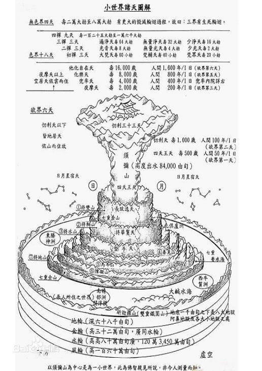

一、前言
科学家从来没有停止过寻找外星文明，然而，宇宙实在太大了，人类科技在浩瀚无际的宇宙面前是如此的渺小。
然而，如果我们对佛法有足够的信心，或许就会明白，原来佛陀早已告诉我们：人类不是孤独的。
《金刚经》：如来是真语者、实语者、如语者、不诳语者、不异语者。
佛陀早就在经典中告诉了我们宇宙和其它生命的状况，其详尽而又合理的描述，让人脑洞大开，足可以让现在诸多的科幻小说汗颜！

二、娑婆世界
从空间上看，宇宙是没有边际的。从时间上看，宇宙是前前无始、后后无终的。
佛将一个日月所照，称为一个小世界，相当于现代话所指的一个行星系，我们所在为太阳系。一千个小世界组成一个小千世界，相当于现代话所指的一个恒星系，我们所在为银河系。一千个小千世界组成一个中千世界，一千个中千世界组成一个大千世界，人们常将大千世界称作三千大千世界。
宇宙由无数个大千世界组成，所有的大千世界都在成、住、坏、空的过程当中迁流变幻、循环不息，没有片刻的静止。每个大千世界过去、现在、未来时时有佛出世，教化着那里的众生。
佛教对于人的由来，是以因缘法说明，至于人类在地球上的最初出现，在《世纪经》、《大楼炭经》、《起世经》中提到，地球形成后最初的人类，是从色界第六天的光音天而来，他们由于贪爱地球上的一种天然食物，吃了以后，身体变重以致于无法飞行，从此就在地上安居下来。依佛经说法，人分别居住在东胜神洲、西牛货洲、南瞻部洲、北俱卢洲等四洲。
我们所在的大千世界称做娑婆世界。娑婆共有两层意思：一层意思是说娑婆世界的众生罪孽深重，必须忍受种种烦恼苦难，故娑婆世界又可意译为忍土，被称为五浊世间，是极乐世界净土的对立面，这里容易产生各种罪孽，因此说大千世界，无奇不有；另一层意思，指释迦牟尼等佛菩萨很能忍受劳累，在污浊的“娑婆世界”中不懈地教化众生，表现出大智、大悲和大勇的精神。

三、须弥山
娑婆世界以须弥山为中心，周围有咸海环绕，海上有四大部洲和八小部洲。须弥山由（金、银、琉璃、水晶）四宝构成，高84000由旬（1由旬可能约13公里，即110万公里），山顶为帝释天，四面山腰是四天王天。根据《长阿含经》的说法，须弥山北为北俱芦洲、东为东胜神洲、西为西牛贺洲、南为南赡部洲（即阎浮提，我们居住的地球）。
四、南瞻部洲
我们人类的生活范围属于南赡部洲（地球），南赡部洲又名阎浮提。生活于此洲的人类虽然在生态环境、福报、寿命等方面，不及其它三洲，但我们人类所特具的“勇猛”、“忆念”、“梵行”三种特性，则优胜于三洲及诸天界，这也是为什么佛陀降生于此世界（南赡部洲）的缘故。
《世记经》：阎浮提人有三事胜。何等为三：一者勇猛强记，能造业行；二者勇猛强记，勤修梵行；三者勇猛强记，佛出其土。
阎浮提地形北宽南窄，人的脸也是上宽下窄，人寿一百岁（佛陀出世之时），有夭折。
中阴身如果感应得南瞻部洲的，便会觉得寒风雪雨，急欲找得躲避的地方。如果生前曾修大善，便见宫殿辉煌，入内即投生为皇室或大富大贵之人。如曾修一般善业的，则按比例而见大厦，小屋，茅房等而成为中富，小康或贫穷之人，如只见墙壁便生为叫化子之类的穷苦人了。此时千万不可随便进入任何室中，但一心称念佛号，则一切境相，便会改变，往生净土了。
五、东胜神洲
位于须弥山东方的咸海中，本洲的众生人身殊胜，因此以身胜为名。
人身长八肘，人面如半月之形，人寿二百五十岁，有夭折。
本洲有三事殊胜：土地极广、极大、极妙。
如果中阴身有感应东胜神洲的善业，这时便会见到一个大湖。湖中雁群，往来嬉戏。如果中阴身乐于此境，走向湖中，即投生此洲。
六、西牛贺洲
位于须弥山西方，以牛、羊、摩尼宝做为货币而行买卖交易。
地形如满月，人面亦如满月。
本洲有殊胜三事：多牛、多羊、多珠玉。
中阴身感应西牛贺洲的便见一湖，湖边有牛食草，如趋前置身境中，便投生此洲了。
七、北俱芦洲
梵语郁单越，华言胜处，以其土胜三洲故也。在须弥山北，其土正方，犹如池沼，纵广一万由旬。
北俱芦洲有种种美妙的山林、河水、浴池、游园、树果等。器物多是金银、琉璃、水晶所制成，并且为大众共同所拥有，没有抢夺、争执，更没有盗贼、恶人、斗争的事。居民寿足千岁，命终之后，便往生忉利天或他化自在天，于四洲中果报最为殊胜，但是由于没有佛出世，因此是学佛的八难之一。
中阴身感应北俱卢洲的亦见一湖，岸边有畜牲及树木。如入境中，便是投生此洲。
八、婚姻
阎浮提、西牛货洲、东胜神洲三者类似，都有男女婚嫁之法。北俱卢洲人则已经没有“我的住所”这种概念了，当然也就没有男女婚嫁的概念了。
在北俱卢洲，男人若是对女人心生爱意即观视于她，女人知道对方之情后如果愿意就来相伴，两人一起到棵树下。如果这个女人与此人是母姨姐妹之类的近亲，则树枝保持原样不下垂，并且树叶萎黄枯落，不出覆盖，不出花果，也不为他们出床和被盖卧具（让人情不自禁想起了电影《阿凡达》里面的神树）。如果不是母姨姐妹之类的近亲，树枝就低垂伸出覆盖，树叶茂密，花果鲜荣，并且为两人生出百千种床和被盖卧具，两人便在树下随意的享受欢娱。
我们现代人可以很容易的猜想这北俱卢洲人的树很可能是一种高度人工智能的设备，并且能够分析男女的基因或类似属性以判断是否是不适合婚配的近亲。佛陀还讲了北俱卢洲很多种树，可能除了自然的树以外很多都是高能量的设备，类似我们认为比较高级的“电器化设备”。
九、食物
西牛贺洲人、东胜神洲人与阎浮提人类似，都是吃饭食菜蔬鱼肉等。北俱卢洲人不耕种，但自然而有成熟的粳米供他们食用。而且，请注意，他们吃素！这不是高度“机械化”了的农业生产，而是因为前世清心寡欲以及修行不辍，感召的来世投生环境的自然福报。

十、总结
佛陀在经典中还对世界的形成过程、人类的来源等等进行了详尽的解说，限于篇幅，不再一一引述，感兴趣的佛友可以阅读经典了解更多。
总而言之，具有无限神通与无边智慧的佛陀，是人类史上第一个向我们说出宇宙中有外星人存在并详细描述了外星人的生命形态。我们亦由此可知，宇宙有生命存在的星球是非常多的，地球仅仅是其中之一。
最后，回头说说我们生活的南赡部洲阎浮提。虽然北俱卢洲听起来如此美妙自在富足，但其实其他三洲都比不上南赡部洲。
为什么呢？因为“安逸修道难”，只有苦多乐少的南赡部洲，才能生起出离心，适合修行，因此圣人才降临这里说法度生。所以正信的佛教，从不提倡信众求生其他人道三洲，乃至于天道，而是鼓励众生一定要志在出轮回，永离诸烦恼，从而返本归真、苦乐不染。